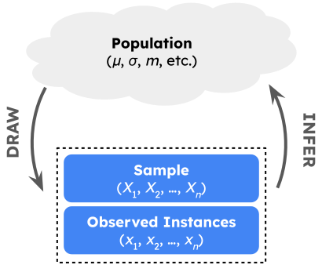
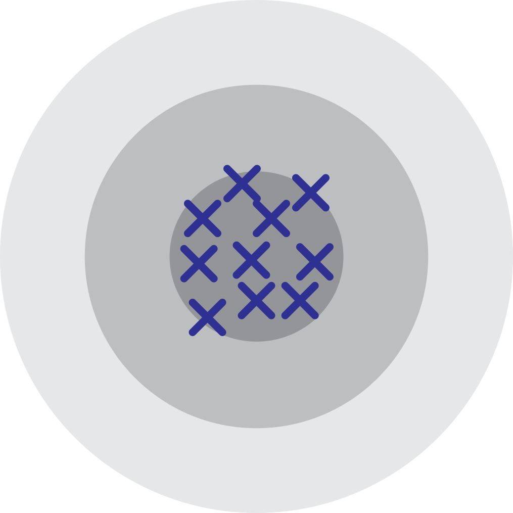
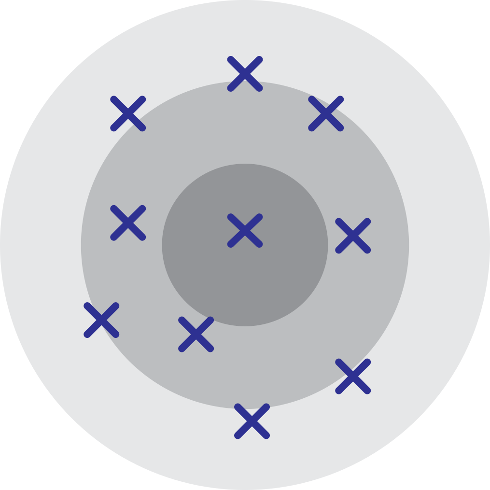

Week 5 Discussion Section
PSTAT 120B, Spring 2025, with Dr. Brian Wainwright
Department of Statistics and Applied Probability; UCSB
April 29, 2025
\[ \newcommand\R{\mathbb{R}} \newcommand{\N}{\mathbb{N}} \newcommand{\E}{\mathbb{E}} \newcommand{\Prob}{\mathbb{P}} \newcommand{\F}{\mathcal{F}} \newcommand{\1}{1\!\!1} \newcommand{\comp}[1]{#1^{\complement}} \newcommand{\Var}{\mathrm{Var}} \newcommand{\SD}{\mathrm{SD}} \newcommand{\vect}[1]{\vec{\boldsymbol{#1}}} \newcommand{\Cov}{\mathrm{Cov}} \newcommand{\Corr}{\mathrm{Corr}} \usepackage[makeroom]{cancel} \]
Recap
Framework for Statistical Inference

Goal: to make inferences about a population parameter.
To do so, we take random samples from the population.
A statistic is a function of a random sample: \(T := T(X_1, \cdots, X_n)\)
- Statistics, therefore, are random variables; their distributions are called sampling distributions
Recap
Inference
Inference is, broadly speaking, divided into two subcategories: estimation and hypothesis testing
We’ll start by talking about estimation, and then later talk about hypothesis testing.
In estimation, we specifically seek to estimate the value of a population parameter
- E.g. the true average weight of all cats in the world
In fact, let’s return to this “average cat weight” example.
Estimation
General Framework
Goal
To estimate the true average weight of all cats in the world.
Last week, we talked about taking samples of cats and recording their weights.
It seems natural that the average of our sampled cat weights should correspond, in some way, to the average of all cats in the world.
This is the basic idea behind estimation: we’ll use statistics (functions of our sample) to estimate the true value of a parameter.
- E.g. using the sample average cat weight to say something about the true population average cat weight.
Estimation
General Framework
- Three key terms:
- Estimand: another word for the parameter we are trying to estimate.
- Estimator: a statistic being used to estimate the estimand.
- Another way to think about this: a “rule” used to estimate the parameter.
- Estimate: a particular realization (i.e. observed instance) of an estimator.
Estimation
Example
Example
A vet wishes to estimate the true weight of all cats in the world. She takes a sample of 10 cats, and finds their average weight to be 9.12 lbs.
The estimand is the true average weight of all cats in the world (which we can call µ).
The estimator is the sample mean: we are using sample means to estimate µ.
The estimate in this scenario is 9.12 lbs, as this is a particular realization of our estimator.
Your Turn!
Your Turn!
Work with your neighbors on the Warm-Up Problem from this week’s worksheet.
04:00
Estimation
Desirable Properties of Estimators
There are potentially many estimators we can use to estimate a particular parameter.
As such, it is necessary to establish a notion of what makes a “good” estimator (or, equivalently, what makes one estimator “better” than another).
One notion is unbiasedness: an estimator \(\widehat{\theta}_n\) for \(\theta\) is said to be unbiased if \(\E[\widehat{\theta}_n] = \theta\).
- “On average, the estimator gets it right.”
- Mathematically: means the sampling distribution is centered at the right (true) value.
Estimation
An Analogy
Unbiasedness, however, is often not enough. To motivate why, let’s take a look at an analogy.
An analogy is often drawn between estimation and hitting a bullseye.
- The bullseye is akin to our estimand, and estimates are represented by shots fired at the target.
- The estimator is, therefore, akin to the marskperson.
An unbiased estimator is analogous to a marksperson for whom the average location of shots is the bullseye.
Estimation
Two Markspersons
- Which of the following markspersons are “better”?

Marksperson 1

Marksperson 2
Estimation
Two Markspersons
So, unbiasedness is not enough; we’d also like small variance.
To that end, we introduce the mean squared-error (MSE) of an estimator: \[ \mathrm{MSE}(\widehat{\theta}_n, \theta) := \E\left[(\widehat{\theta}_n - \theta)^2 \right] \]
Bias-Variance Decomposition
\[ \mathrm{MSE}(\widehat{\theta}_n, \theta) := \mathrm{Bias}^2(\widehat{\theta}_n, \theta) + \Var(\widehat{\theta}_n) \]
where \(\mathrm{Bias}(\widehat{\theta}_n, \theta) := \E[\widehat{\theta}_n] - \theta\).

PSTAT 120B Sp25; Discussion Section 5, © Ethan P. Marzban